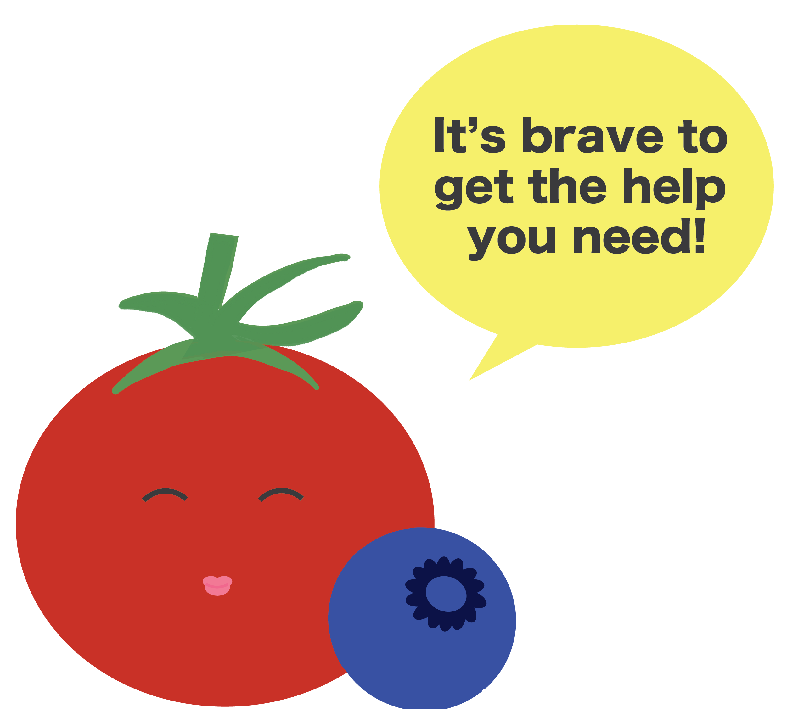

This page will be a series of links to resources on productivity and mental health.
I would like to do more research later on to select good sources, but I know that I want to include CAPS and other
University of Michigan-specific resources, and I would like to find a TedTalk or cute youtube video to embed that discusses
the Pomodoro method.